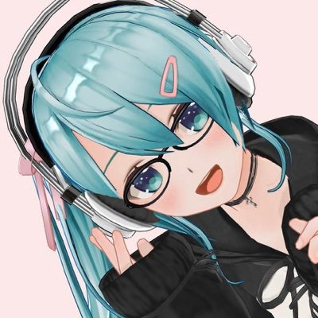

Vキャスター佐藤さんがネット超会議夏を駆け回る！
さとさとネット超会議2020夏

佐藤さんが、カスタムキャストの魅力を伝えるため大奔走！
新人(?)Vキャスター佐藤さんが、カスタムキャストの魅力を伝えるため大奔走！
24時間リレー配信など、カスタムキャストでできる企画を何本も打ち立てる！
佐藤さん自身、公式企画「超ゲーム実況(夏)ROOKIES」への殴り込みも...！？乞うご期待！
概要：『#カスタムキャスト』を勝手にPRします。
— 佐藤さん@さとさと超会議の新人Vtuber (@tanoseesaw) August 5, 2020
（訳：佐藤が遊ぶだけ）#さとさと超会議2020夏 #ネット超会議2020夏 #ユーザー企画応募 pic.twitter.com/FFjdC4wW2H
企画主

佐藤さん
@tanoseesaw